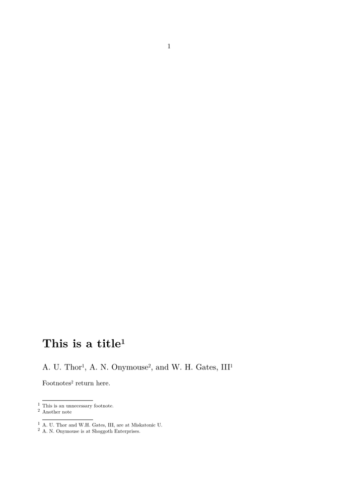

In LaTeX, there is a form of metadata common to many classes, known as the \thanks command. It is essentially an un-numbered footnote that comes out of sequence with the rest of the footnotes. It can be simulated in ConTeXt simply by defining another note type (see \setupfootnotes for a rough idea of the available parameters):
\definenote[thanks][conversion=set 2]
And used with the usual note and referencing commands:
\starttext {\bfc This is a title\footnote{This is an unnecessary footnote.}} \subject{ % just a cheap heading without explicitly renaming it `\author' A. U. Thor\thanks[Misk]{A. U. Thor and W.H. Gates, III, are at Miskatonic U.}, A. N. Onymouse\thanks{A. N. Onymouse is at Shoggoth Enterprises.}, and W. H. Gates, III\note[Misk] } Footnotes\footnote{Another note} return here. \stoptext
In Mark IV you should use numberconversion instead of conversion.
This bare example looks like:
- 
Alternative
An alternative approach is given here: http://archive.contextgarden.net/message/20120120.171632.b45676e9.en.html